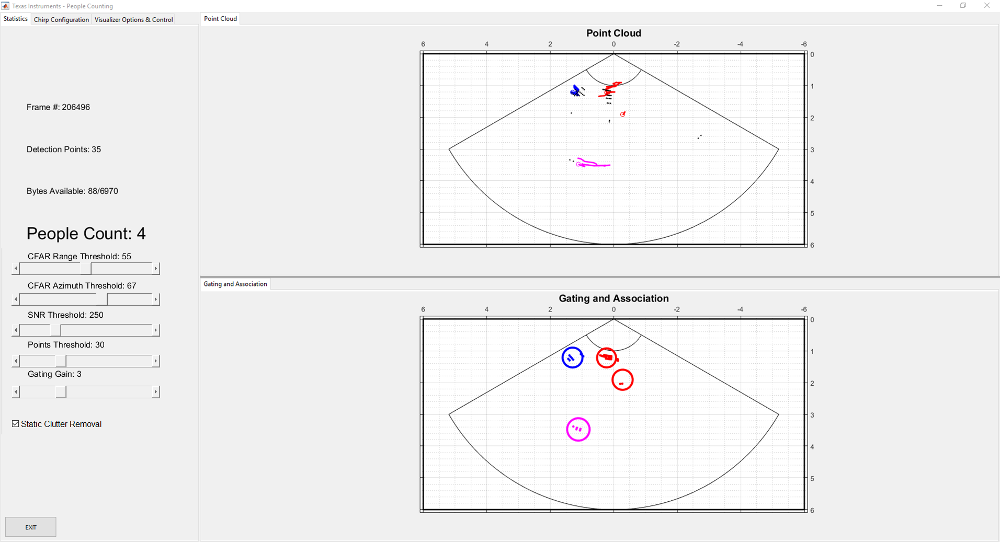
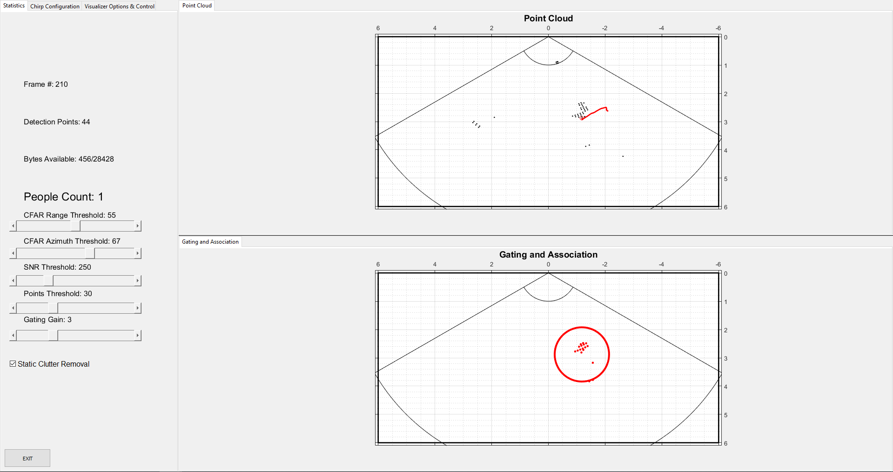

Overview
===========
This lab demonstrates the use of TI mmWave sensors to count and track multiple people simultaneously.
Detection and tracking algorithms run onboard the IWR6843ISK mmWave sensor and are used to localize people and track their movement with a high degree of accuracy.
mmWave sensors can reduce false detections from challenging environments such as direct sunlight, no-light, fog, or smoke, and are particularly suited for privacy-conscious applications.
In this demonstration, localization and tracking is performed upon any moving object in the scene; static objects such as chairs, tables, and walls are ignored.
The IWR6843ISK mmWave sensor outputs a data stream consisting of point cloud information and a list of tracked objects which can be visualized using the software included in this lab.
[[r! Device Version: ES2.0
This lab is only compatible with ES2.0 Devices.
]]
<img src="images/overview.gif" width="400"/> <img src="images/pplcount_overview_block2.png" width="450"/>
Quickstart
===========
1. Hardware and Software Requirements
-----------
### Hardware
Item | Details
--------------------------|-----------------
Device | [Industrial mmWave Carrier Board](http://www.ti.com/tool/MMWAVEICBOOST) and [IWR6843ISK](http://www.ti.com/tool/IWR6843ISK).
Mounting Hardware | The EVM needs to be mounted at a height of ~1.5-2.5m with a slight downtilt. An [adjustable clamp style smartphone adapter mount for tripods](https://www.amazon.com/Vastar-Universal-Smartphone-Horizontal-Adjustable/dp/B01L3B5PBI/) and a [60-75" tripod](https://www.amazon.com/Neewer-Portable-centimeters-Camcorder-kilograms/dp/B01N6JCW8F/) can be used to clamp and elevate the EVM. This is only an example solution for mounting; other methods can be used so far as setup specifications are met.
Computer | PC with Windows 7 or 10. If a laptop is used, please use the 'High Performance' power plan in Windows.
Micro USB Cable | Due to the high mounting height of the EVM, an 8ft+ cable or USB extension cable is recommended.
Power Supply | 5V, >3.0A with 2.1-mm barrel jack (center positive). The power supply can be wall adapter style or a battery pack with a USB to barrel jack cable.
Tape Measure |
### Software
Tool | Version | Required For |Download Link|
----------------------------|---------------------------|---------------|-------------|
mmWave Industrial Toolbox | Latest | Contains all lab material. | [mmWave Industrial Toolbox](http://dev.ti.com/tirex/explore/node?node=AJoMGA2ID9pCPWEKPi16wg__VLyFKFf__LATEST)
TI mmWave SDK | 3.3.0.x | Compile People Counting Lab | [TI mmWave SDK 3.3.0.x](http://software-dl.ti.com/ra-processors/esd/MMWAVE-SDK/latest/index_FDS.html) and all the related tools are required to be installed as specified in the [mmWave SDK release notes](http://software-dl.ti.com/ra-processors/esd/MMWAVE-SDK/latest/exports/mmwave_sdk_release_notes.pdf)
MATLAB Runtime | 2017a (9.2) | Quickstart Visualizer | To run the quickstart visualizer the [runtime](https://www.mathworks.com/products/compiler/matlab-runtime.html) is sufficient.
Uniflash | Latest | Quickstart Firmware | [Download offline tool](http://www.ti.com/tool/UNIFLASH) or use [cloud version](https://dev.ti.com/uniflash/#!/)
2. Physical Setup
-----------
1. Follow the instructions for [Hardware Setup of ICB for Functional Mode](../../../common/docs/hardware_setup/hw_setup_antenna_module_and_carrier_for_functional.html)
2. For best results, the EVM should be positioned high enough to be above the top of tracked objects and with a slight down tilt.
The aim is to position the EVM so that the antenna beam can encompass the area of interest.
If the down tilt is too severe, noise from ground clutter would increase and the effective sensing area would decrease.
If threre is no down tilt, counting performance would be worse for cases in which one person is in line with and shielded by another person.
Given the antenna radiation pattern of the EVM, consideration should be taken to not mount the EVM too close or oriented with beam directed to the ceiling as this can increase the noise floor and result in less optimal performance.
<img src="images/downtilt.jpg" width="700"/>
**Setup Requirements:**
* Elevate EVM: 1.5-2.5m high
* Down tilt: ~10 degree
**Setup using suggested tripod and smartphone clamp mount:**
1. Screw on clamp mount to tripod
2. Clamp EVM across its width below power barrel jack to attach EVM
3. Adjust tripod head for ~10 degree down tilt (Tip: Bubble or level smartphone apps can be used to measure down tilt)
4. Plug in micro-usb and power supply to EVM
5. Extend tripod so that the EVM is elevated 1.5-2.5m from the ground
6. Position EVM and tripod assembly in desired location of room. The EVM should be positioned so that the 120 degree FOV of the EVM antenna encompasses the area of interest and points to the region in which people are expected to enter the space.
<img src="images/mounting_setup.png" width="600"/>
<a name="flash_the_evm"></a>
3. Flash the EVM
-----------
* Follow the instructions for [Hardware Setup of ICB for Flashing Mode](../../../common/docs/hardware_setup/hw_setup_antenna_module_and_carrier_for_flashing.html)
* Follow the instruction to [Flash the mmWave Device](../../../common/docs/software_setup/using_uniflash_with_mmwave.html)
Image | Location
--------------------------|------------
Meta Image 1/RadarSS | `C:\ti\<mmwave_industrial_toolbox_install_dir>\labs\people_counting\68xx_people_counting\prebuilt_binaries\pplcount_lab_xwr68xx.bin`
4. Run the Lab
-----------
To run the lab, launch and configure the visualizer which displays the detection and tracked object data received via UART.
### 1. Launch the visualizer:
* Navigate to `C:\ti\<mmwave_industrial_toolbox_install_dir>\labs\people_counting\68xx_people_counting\gui\pplcount_gui.exe`
* Run `pplcount_gui.exe`
* A black console log window will appear.
* After 30-60sec, the **mmWave People Counting Visualizer Setup** window should appear
<img src="images/visualizer_window.png" width="600"/>
<a name="configure_visualizer"></a>
### 2. Configure Visualizer
-----------
On the left side of the visualizer setup window are options and parameters for running the demo. On the right side are graphics to aid in understanding the configuration options.
The plot titled **Top View of Scene** updates if **Chirp Configuration** or **EVM and Room Orientation** are changed. This plot illustrates how the visualizer thinks the radar is setup in a scene.
The approximate field of view and range of the radar is depicted by the red outline. The thicker black rectangle shape represents the defined visualization area. Typically, if the demo is setup in an indoor environment,
the visualization area should be defined to match the dimensions of the room.
The following sections will step through the setup requirements to run the people counting demo:
#### 1. Select COM Ports
* Specify **UART** and **DATA** COM ports using the text boxes. Click **Connect** to open and connect to ports.
[[g! COM Status
Message should update to show that the COM ports have been connected before continuing.
]]
#### 2. Chirp Configuration
* A custom chirp configuration can be loaded or leave the default chirp developed for people counting selected.
* To load a custom config: select **Select file** option and then click **Browse Files** button and choose desired '.cfg' file. The **Top Down View of Scene** plot will update the depiction of the radar range depending on the chirp loaded.
* The default chirp was developed for people counting in indoor environments with a max range of approximately 6m.
* Chirp configurations for other environments can be found on the <a href="http://dev.ti.com/tirex/explore/node?node=AP1aHhMqp-PFvRR0IX7sfA__VLyFKFf__LATEST" target="_blank">chirp configurations page.</a>
[[+d Expand for details of default chirp:
Chirp Parameter (Units) | Value
-------------------------|------------
Start Frequency (GHz) | 60.6
Slope (MHz/us) | 53
Samples per chirp | 128
Chirps per frame | 256
Frame duration (ms) | 50
Sampling rate (Msps) | 2.5000
Bandwidth (GHz) | 2713.6
Range resolution (m) | 0.055
Max Unambiguous Range (m)| 6.3
Max Radial Velocity (m/s)| 6.55
Velocity resolution (m/s)| 0.1
Azimuth resolution (deg) | 14.5
Number of Rx | 4
Number of Tx | 2
+]]
#### 3. EVM and Room Orientation
* **Boundary Parameters A-D**: relate to the defined visualization area. They are measured from the perspective of and relative to the EVM. The EVM is always the origin.
* Stated another way, changing A-D effectively zooms the plot in and out about the EVM origin. Changes to A-D are updated in **Top Down
View of Scene** plot.
* The default, pre-populated parameters correlate to plotting the radar's max FOV and the max range with the default chirp. They can be left as is if observing the maximum area of detection is desired.
* If it is instead desired to define the visualization area to match the dimensions of the room then the parameters need to be modified.
* To get a sense of the orientation directions, picture standing at the location the EVM is mounted and face straight ahead to the wall in front of you. The wall to your right is the right boundary. The distance from you (the EVM) to the right wall in meters is the value for parameter A). The same follows for the left, back, and front boundaries.
<img src="images/visualizer_window.png" width="400">
* **Azimuth Angle Parameter E**: azimuth tilt angle. If the EVM is not positioned facing straight ahead to the front boundary then it has an azimuth tilt angle. Specify the angle in degrees and view the change in the **Top Down View of Scene** plot. The red outline defining the sensor area will tilt either towards the left or right boundary.
* This parameter is signed. If the EVM is tilted towards the right wall, include the + sign. For the left wall include the - sign. If EVM is oriented straight ahead the angle is 0 and the sign can be either. The figure below details the sign convention.
<img src="images/angle.jpg" width="400"/>
* OPTIONAL: Define Subzones for Counting
* Rectangular areas can be defined to specify specific regions for which to keep another count of the number of people present.
* For example, if two boxes are defined then the visualizer will report a total people count for all the people in the scene it detects, a Box 1 count, and a Box 2 count.
* **Launch Visualizer**
* Click **Start** to launch visualizer with configurations specified.
5. Understanding the Output
-----------

The visualizer consists of:
* A top panel with a **Point Cloud** plot.
* The black points represent the point cloud returned by the detection layer of the device.
* Each new tracked object is assigned one of five possible colors (blue, red, green, cyan, and magenta).
* The small colored ring represents the computed centroid of the point cloud for the tracked object.
* The "snail trail" trace represent 100 frames of history of the tracked object's centroid.
* A bottom panel with a **Gating and Association** plot.
* This plot visualizes the result of the tracking algorithm.
* The colored points represent the detection points (black points in previous frame's Point Cloud plot) which are associated to a specific track. Unassociated points that do not belong to a track are not plotted.
* The colored circular ring is centered over the centroid of of the tracked object. The diameter of the ring is related to the variance in location of the tracked object's detection points.
* A side panel with three tabs: Statistics, Chirp Configuration, and Visualizer Options
* TIP: If lag is an issue, check the **Consolidate plotting** option in **Visualizer Options**. This will only display one of the two plots.
* Live tuning is now available in the statistics tab. See section 6 for details.
**Quitting the Visualizer** :
To exit the visualizer use the exit button at the bottom left of the window. This will delete the open serial ports and save an output file of the session in fhist.mat.
6. Live Tuning
-----------

The visualizer has new options to tune the performance of the lab on the fly. These options include:
* CFAR Tuning
* The demo uses CFAR thresholds to determine when a signal has enough energy to be considered a detection. Two thresholds are used; both can be changed with sliders.
* CFAR Range Threshold - threshold for the Range pass. Increasing lowers the number of detected points.
* CFAR Azimuth Theshold - threshold for the Azimuth pass. Increasing lowers the number of detected points.
*Note - lowering the thresholds too far may cause a crash due to limitations of the UART interface. If this occurs, increase the thresholds.
* Allocation tuning
* The demo uses allocation parameters to determine when a new target has entered the scene. Two of these have been brought out to enable easy live tuning with sliders.
* SNR Threshold - a potential target must have a cumulative SNR higher than the SNR threshold to be allocated. Raising this value increases difficulty of allocation and can help mitigate false detections.
* Points Threshold - a potential target must have more points in its cluster than the points threshold. Raising this value increases difficulty of allocation.
* Gating Gain
* The demo creates a gating function for each tracked target. As this value gets larger, points farther from the target can be associated with the target
* Static Clutter Removal
* Disabling this checkbox will allow the device to detected radar returns of objects with 0 doppler.
Developer's Guide
===========
Build the Firmware from Source Code
-----------
### 1. Software Requirements
Tool | Version | Download Link
----------------------------|---------------------------|--------------
mmWave Industrial Toolbox | Latest | [mmWave Industrial Toolbox](http://dev.ti.com/tirex/explore/node?node=AJoMGA2ID9pCPWEKPi16wg__VLyFKFf__LATEST)
TI mmWave SDK | 3.3.0.x | [TI mmWave SDK](http://software-dl.ti.com/ra-processors/esd/MMWAVE-SDK/latest/index_FDS.html) and all the related tools are required to be installed as specified in the mmWave SDK release notes
Code Composer Studio | 8.1.0 | [Code Composer Studio v8](http://processors.wiki.ti.com/index.php/Download_CCS#Code_Composer_Studio_Version_8_Downloads)
TI SYS/BIOS | 6.73.01.01 | Included in mmWave SDK installer
TI ARM Compiler | 16.9.6.LTS | Included in mmWave SDK installer
TI CGT Compiler | 7.4.16 | Version 7.4.16 must be downloaded and installed. [Download link](https://www.ti.com/licreg/docs/swlicexportcontrol.tsp?form_type=2&prod_no=ti_cgt_c6000_7.4.16_windows_installer.exe&ref_url=http://software-dl.ti.com/codegen/esd/cgt_registered_sw/C6000/7.4.16)
XDC | 3.50.08.24 | Included in mmWave SDK installer
C64x+ DSPLIB | 3.4.0.0 | Included in mmWave SDK installer
C674x DSPLIB | 3.4.0.0 | Included in mmWave SDK installer
C674x MATHLIB (little-endian, elf/coff format) | 3.1.2.1 | Included in mmWave SDK installer
mmWave Radar Device Support Package | 1.6.1 or later | Upgrade to the latest using CCS update process (see SDK user guide for more details)
TI Emulators Package | 7.0.188.0 or later | Upgrade to the latest using CCS update process (see SDK user guide for more details)
Uniflash | Latest | Uniflash tool is used for flashing TI mmWave Radar devices. [Download offline tool](http://www.ti.com/tool/UNIFLASH) or use the [Cloud version](https://dev.ti.com/uniflash/#!/)
### 2. Import Lab Project
For the People Counting lab, there are two projects, the DSS for the C674x DSP core and the MSS project for the R4F core, that need to be imported to CCS and compiled to generate firmware for the xWR6843.
[[b! Project Workspace
When importing projects to a workspace, a copy is created in the workspace. All modifications will only be implemented for the workspace copy. The original project downloaded in mmWave Industrial Toolbox is not touched.
]]
1. Start CCS and setup workspace as desired.
2. Import the project(s) specified below to CCS from the src/ folder. See instructions for importing [here](../../../../docs/readme.html#import-ccs-projects-from-the-mmwave-industrial-toolbox-into-code-composer-studio).
* **68xx_pplcount_dss**
* **68xx_pplcount_mss**
3. Verify that the import occurred without error: in CCS Project Explorer, both **68xx_pplcount_mss** and **68xx_pplcount_dss** should appear.
### 3. Build the Lab
The DSS project must be built before the MSS project.
1. Select the **68xx_pplcount_dss** so it is highlighted. Right click on the project and select **Rebuild Project**. The DSS project will build.
2. Select the **68xx_pplcount_mss** so it is highlighted. Right click on the project and select **Rebuild Project**. The MSS project will build, the the lab binary will be constructed automatically.
2. On successful build, the following should appear:
* In 68xx_pplcount_dss → Debug, **68xx_pplcount_dss.xe674** (this is the C67x binary used for CCS debug mode)
* In 68xx_pplcount_mss → Debug, **68xx_pplcount_mss.xer4f** (this is the Cortex R4F binary used for CCS debug mode) and **68xx_pplcount_lab.bin** (this is the flashable binary used for deployment mode)
{{y Selecting Rebuild instead of Build ensures that the project is always re-compiled. This is especially important in case the previous build failed with errors.}}
[[r! Build Fails with Errors
If the build fails with errors, please ensure that all the software requirements are installed as listed above and in the mmWave SDK release notes.
]]
[[b! Note
As mentioned in the [Quickstart](#quickstart) section, pre-built binary files, both debug and deployment binaries are provided in the pre-compiled directory of the lab.
]]
{{y The DSS project must be built using compiler version 7.4.16.
To check the build settings, right click on the project to select **Show build settings...**.
Under the **General** tab, the **Advanced Settings** section has a drop down menu for **Compiler Version**.
Ensure that it reads **TI v7.4.16**. Using a 8.x compiler will not work. The project will compile without error but will not function correctly. [Download here if missing.](https://www.ti.com/licreg/docs/swlicexportcontrol.tsp?form_type=2&prod_no=ti_cgt_c6000_7.4.16_windows_installer.exe&ref_url=http://software-dl.ti.com/codegen/esd/cgt_registered_sw/C6000/7.4.16)
}}
### 4. Execute the Lab
There are two ways to execute the compiled code on the EVM:
* Deployment mode: the EVM boots autonomously from flash and starts running the bin image
* Using Uniflash, flash the **PC_lab_68xx.bin** found at `<PROJECT_WORKSPACE_DIR>\PC_mss_68xx\Debug\PC_lab_68xx.bin`
* The same procedure for flashing can be use as detailed in the Quickstart [Flash the EVM](#flash_the_evm) section.
* Debug mode: Follow the instructions for [Using CCS Debug for Development](../../../common/docs/software_setup/using_ccs_debug.html)
After executing the lab using either method, the lab can be visualized using the [Quick Start GUI](#configure_visualizer) or continue to working with the [GUI Source Code](#visualizer_source)
<a name="visualizer_source"></a>
Visualizer Source Code
-----------
{{y Working with and running the Visualizer source files requires a MATLAB License not just the MATLAB Runtime Engine}}
The detection processing chain and group tracking algorithm are implemented in the firmware. The visualizer serves to read the UART stream from the device and then plot the detected points and tracked objects.
Source files are located at `C:\ti\mmwave_industrial_toolbox_<VER>\labs\people_counting\68xx_people_counting\gui`.
* **main_pplcount_viz.m**: the main program which reads and parses the UART data for visualization
* **setup.m**, **setup.fig**: creates the visualizer configuration window used in GUI setup mode where user can input setup parameters
* **mmw_pplcount_demo_default.cfg**: configuration file
Data Formats
-----------
A TLV(type-length-value) encoding scheme is used with little endian byte order. For every frame, a packet is sent consisting of a fixed sized **Frame Header** and then a variable number of TLVs depending on what was detected in that scene. The TLVs can be of types representing the 2D point cloud, target list object, and associated points.
<img src="images/packet_structure.png" width="600"/>
### Frame Header
Size: 52 bytes
```Matlab
frameHeaderStructType = struct(...
'sync', {'uint64', 8}, ... % syncPattern in hex is: '02 01 04 03 06 05 08 07'
'version', {'uint32', 4}, ... % 0xA6843
'platform', {'uint32', 4}, ... % See description below
'timestamp', {'uint32', 4}, ... % 600MHz free running clocks
'packetLength', {'uint32', 4}, ... % In bytes, including header
'frameNumber', {'uint32', 4}, ... % Starting from 1
'subframeNumber', {'uint32', 4}, ...
'chirpMargin', {'uint32', 4}, ... % Chirp Processing margin, in ms
'frameMargin', {'uint32', 4}, ... % Frame Processing margin, in ms
'uartSentTime' , {'uint32', 4}, ... % Time spent to send data, in ms
'trackProcessTime', {'uint32', 4}, ... % Tracking Processing time, in ms
'numTLVs' , {'uint16', 2}, ... % Number of TLVs in thins frame
'checksum', {'uint16', 2}); % Header checksum
```**Frame Header Structure in MATLAB syntax for name, type, length**
```Matlab
% Input: frameheader is a 52x1 double array, each index represents a byte of the frame header
% Output: CS is checksum indicator. If CS is 0, checksum is valid.
function CS = validateChecksum(frameheader)
h = typecast(uint8(header),'uint16');
a = uint32(sum(h));
b = uint16(sum(typecast(a,'uint16')));
CS = uint16(bitcmp(b));
end
```**validateChecksum(frameheader) in MATLAB syntax**
### TLVs
The TLVs can be of type **POINT_CLOUD_2D**, **TARGET_LIST_2D**, or **TARGET_INDEX**.
#### **TLV Header**
Size: 8 bytes
```Matlab
% TLV Type: 06 = Point cloud, 07 = Target object list, 08 = Target index
tlvHeaderStruct = struct(...
'type', {'uint32', 4}, ... % TLV object
'length', {'uint32', 4}); % TLV object Length, in bytes, including TLV header
```**TLV header in MATLAB syntax**
Following the header, is the the TLV-type specific payload
#### **Point Cloud TLV**
Type: POINT_CLOUD_2D
Size: sizeof (tlvHeaderStruct) + sizeof (pointStruct2D) x numberOfPoints
<img src="images/tlv_pointcloud_structure.png" width="250"/>
Each Point Cloud TLV consists of an array of points. Each point is defined in 16 bytes.
```java
pointStruct2D = struct(...
'range', {'float', 4}, ... % Range, in m
‘azimuth', {'float', 4}, ... % Angle, in rad
'doppler', {'float', 4}, ... % Doppler, in m/s
'snr', {'float', 4}); % SNR, ratio
```**Point Structure in MATLAB syntax**
#### **Target Object TLV**
Type: TARGET_LIST_2D
Size: sizeof (tlvHeaderStruct) + sizeof (targetStruct2D) x numberOfTargets
<img src="images/tlv_target_structure.png" width="250"/>
Each Target List TLV consists of an array of targets. Each target is defined in 68 bytes.
```java
targetStruct2D = struct(...
'tid', {'uint32', 4}, ... % Track ID
'posX', {'float', 4}, ... % Target position in X dimension, m
'posY', {'float', 4}, ... % Target position in Y dimension, m
'velX', {'float', 4}, ... % Target velocity in X dimension, m/s
'velY', {'float', 4}, ... % Target velocity in Y dimension, m/s
'accX', {'float', 4}, ... % Target acceleration in X dimension, m/s2
'accY', {'float', 4}, ... % Target acceleration in Y dimension, m/s
'EC', {'float', 9*4}, ... % Error covariance matrix, [3x3], in range/angle/doppler coordinates
'G', {'float', 4}); % Gating function gain
```**Target Structure in MATLAB syntax**
#### **Target Index TLV**
Type: TARGET_INDEX
Size: sizeof (tlvHeaderStruct) + numberOfPoints (NOTE: here the number of points are for frame n-1)
<img src="images/tlv_targetid_structure.png" width="250"/>
Each Target List TLV consists of an array of target IDs. A targetID at index ***i*** is the target to which point ***i*** of the previous frame's point cloud was associated.
Valid IDs range from 0-249.
```java
targetIndex = struct(...
'targetID', {'uint8', 1}); % Track ID
```**Target ID Structure in MATLAB syntax**
Other Target ID values:
Value | Meaning
------------|-----------
253 | Point not associated, SNR too weak
254 | Point not associated, located outside boundary of interest
255 | Point not associated, considered as noise
#### Example Parsing
Example UART stream with annotation of Frame Header and TLVs.
<img src="images/example_parse.png" width="700"/>
Customization
-----------
#### **Tuning Guide**
* Please refer to the **People Counting Demo Customization Guide** which can be found at `C:\ti\<mmwave_industrial_toolbox_install_dir>\labs\people_counting\68xx_people_counting\docs\pplcount_customization_guide.pdf`
#### **Live Tuning**
* More live tuning is availabe than those values enabled in the GUI
* The following commands can be sent to change algorithm thresholds at runtime:
* LiveCFARThresh RT AT SCR
* RT is range threshold (1 - 1000)
* AT is azimuth threshold (1 - 1000)
* SCR is static clutter removal (0 is off, 1 is on)
* LiveAllocation - same input as AllocationParam described in customization guide
* LiveGating - same input as GatingParam described in customization guide
* LiveState - same input as StateParam described in customization guide
* LiveScenery - same input as SceneryParam described in customization guide
* The commands should be sent to the UART COM Port with baudrate 115200:
* e.g.: LiveGating 3 2 2 0
Need More Help?
===========
* Find answers to common questions on <a href="https://e2e.ti.com/support/sensor/mmwave_sensors/w/wiki" target="_blank">mmWave E2E FAQ</a>
* Search for your issue or post a new question on the <a href="https://e2e.ti.com/support/sensor/mmwave_sensors/f/1023" target="_blank">mmWave E2E forum</a>
* See the SDK for more documentation on various algorithms used in this demo. Start at <MMWAVE_SDK_DIRECTORY>/docs/mmwave_sdk_module_documentation.html>